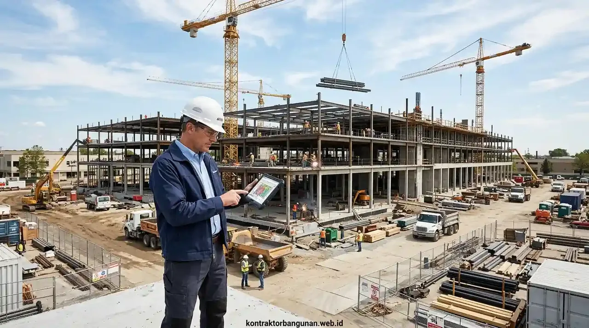

Mengapa Memilih Kontraktor Proyek Komersial Membutuhkan Standar Berbeda dari Rumah Tinggal?
Proyek komersial memiliki kompleksitas beban lalu lintas ruang tinggi, tuntutan utilitas MEP berat, kepatuhan regulasi publik, dan batas waktu ketat.
Berbeda dengan proyek rumah tinggal yang lebih menitikberatkan pada preferensi estetika personal, proyek komersial seperti ruko perbankan, restoran waralaba (franchise), showroom, maupun pergudangan logistik menuntut kalkulasi kekuatan struktur yang jauh lebih masif. Lantai bangunan komersial harus mampu menahan beban hidup (live load) hingga 400–500 kg/m², instalasi panel listrik tiga fase berdaya tinggi, serta sistem proteksi kebakaran hidran yang terintegrasi dengan regulasi Dinas Pemadam Kebakaran setempat.
Jika Anda menggunakan pelaksana konvensional yang biasa mengerjakan hunian sederhana tanpa pemahaman standar komersial, risiko kegagalan fungsional seperti kebocoran atap bentang lebar, penurunan lantai (floor settlement), hingga instalasi kabel korsleting dapat menghentikan aktivitas operasional usaha Anda secara fatal.
7 Parameter Kunci dalam Tips Memilih Kontraktor Proyek Komersial
Tujuh parameter utama meliputi legalitas SBU, kecukupan modal kerja, sistem manajemen mutu ISO, transparansi RAB, ketersediaan alat berat, garansi struktur, dan kontrak mengikat.
Dalam menyeleksi kandidat pelaksana pembangunan properti komersial Anda, pastikan checklist evaluasi berikut terpenuhi sebelum menandatangani SPK:
- Kelengkapan Dokumen Perizinan Usaha: Memiliki NIB dengan KBLI Konstruksi Gedung Komersial (41012), Sertifikat Standar Terverifikasi LPJK, serta sertifikasi keahlian tenaga kerja (SKK Konstruksi).
- Kesehatan Finansial & Cash Flow Kontraktor: Kontraktor komersial yang sehat memiliki kapasitas modal untuk mendanai pengadaan material awal tanpa mengandalkan uang muka berlebih atau menghentikan proyek saat termin sedang diajukan.
- Penyusunan Rencana Anggaran Biaya (RAB) Terperinci: Uraian pekerjaan mencakup rincian volume (Bill of Quantities), merk spesifik material arsitektural, mutu beton (K-300 / fc 25 MPa), serta spesifikasi kabel NYY/NYFGBY berstandar LMK.
- Metodologi Kerja & Standard Operating Procedure (SOP): Penerapan protokol K3 (Keselamatan dan Kesehatan Kerja) Konstruksi di area proyek untuk meminimalkan risiko kecelakaan kerja dan penutupan area oleh dinas pengawas.
- Kemampuan Koordinasi dengan Tim Konsultan Manajemen Konstruksi (MK): Kontraktor mampu bekerja sama dengan konsultan independen, arsitek perancang, dan auditor struktur pihak ketiga secara transparan.
- Klausul Garansi & Retensi Pembayaran: Menetapkan masa pemeliharaan minimal 3 hingga 6 bulan dengan dana retensi 5% yang hanya dicairkan setelah seluruh fungsi bangunan teruji optimal (testing and commissioning).
- Jaminan Anti-Subkontraktor Ilegal: Kontraktor berkomitmen mengerjakan pekerjaan struktur dan MEP inti dengan tim internal terverifikasi, bukan dialihkan (dijual) ke pemborong liar yang tidak terlatih.
- Audit Finansial: Hindari kontraktor yang meminta uang muka di atas 30% sebelum material struktural tiba di lokasi proyek.
- Klausul Force Majeure: Pastikan batas waktu toleransi cuaca ekstrem diatur jelas agar tidak menjadi alasan keterlambatan sepihak.
- Inspeksi Lapangan Berkala: Libatkan tim konsultan pengawas independen untuk melakukan uji slump beton dan pengujian kuat tekan silinder laboratorium.
Bagaimana Cara Memvalidasi Portofolio dan Rekam Jejak Kontraktor Ruko?
Validasi rekam jejak dilakukan melalui verifikasi dokumen kontrak masa lalu, inspeksi fisik lokasi proyek terbangun, dan wawancara pemilik gedung sebelumnya.
Banyak oknum pelaksana mencantumkan foto render 3D menarik di media sosial atau mengklaim proyek pihak lain sebagai karya mereka. Untuk menghindari jebakan tersebut, lakukan langkah pembuktian berikut:
- Minta Berita Acara Serah Terima (BAST): Kontraktor yang kredibel dapat menunjukkan bukti BAST 1 dan BAST 2 dari proyek komersial sebelumnya sebagai bukti pengerjaan tuntas.
- Lakukan Site Visit Bersama Tim Teknis: Datangi minimal 2 gedung komersial yang telah beroperasi minimal 1 tahun. Perhatikan apakah terjadi retak rambut pada dinding fasad, genangan air pada lantai rooftop, atau kebisingan pada instalasi pipa buang.
- Konfirmasi Kontak Referensi Klien B2B: Hubungi pengelola gedung atau bagian procurement perusahaan yang pernah bekerja sama untuk menanyakan kedisiplinan jadwal dan respons penanganan keluhan garansi.

Analisis dokumen teknis, penjadwalan kurva S, dan penandatanganan kontrak konstruksi komersial terikat hukum.
Tabel Komparasi: Kontraktor Komersial Profesional vs Pemborong Tradisional
Perbandingan langsung standar teknis, jaminan hukum, dan akuntabilitas manajemen antara Kontraktor Bangunan dan pemborong biasa.
| Parameter Evaluasi | Pemborong Tradisional / Mandor Bebas | Standar Kontraktor Bangunan |
|---|---|---|
| Bentuk Badan Hukum | Perorangan tanpa izin usaha resmi | PT / CV Resmi dengan SBU & NIB LPJK |
| Dokumen Perjanjian Kerja | Surat kesepakatan informal bermaterai | Kontrak konstruksi komprehensif mengikat hukum |
| Metode Kontrol Jadwal | Estimasi lisan tanpa kurva S | Kurva S digital & update mingguan terintegrasi |
| Spesifikasi Material & Mutu | Sering memakai istilah 'setara' tanpa merk | Spesifikasi baku SNI & sertifikat uji lab pabrik |
| Penerapan Standar K3 | Minim APD, risiko kecelakaan ditanggung klien | Tim K3 bersertifikat, safety boots, helm, & asuransi |
| Pengurusan Izin PBG & SLF | Tidak melayani atau serahkan ke calo | Paket lengkap asistensi SIMBG, PBG, hingga SLF |
| Kapasitas Penanganan Komplain | Rentan lepas tangan setelah serah terima | Garansi struktur resmi & tim purnajual siaga |
| Jaminan Denda Keterlambatan | Tanpa kompensasi keterlambatan waktu | Klausul liquidated damages per hari keterlambatan |
Pentingnya Manajemen Kurva S dan Transparansi Arus Kas Proyek
Kurva S menyajikan grafik bobot pekerjaan kumulatif versus waktu nyata sehingga deviasi keterlambatan dapat dideteksi dan dimitigasi sejak dini.
Dalam proyek komersial berskala ratusan juta hingga miliaran rupiah, kontrol deviasi proyek tidak boleh didasarkan pada perkiraan visual semata. Kontraktor profesional menyusun Work Breakdown Structure (WBS) yang membagi proyek ke dalam ratusan item pekerjaan dengan bobot persentase presisi:
Jika terjadi deviasi negatif lebih dari 5% (misalnya akibat cuaca ekstrem atau kendala material khusus), kontraktor wajib menerapkan recovery plan berupa penambahan jam kerja (lembur), penambahan alat bantu mesin, atau percepatan jalur pengadaan material tanpa membebankan biaya tambahan kepada pemilik proyek (owner).
Langkah Mengajukan Dokumen RFP (Request for Proposal) yang Efektif
Dokumen RFP yang rinci membantu Anda memperoleh penawaran komparatif yang seimbang, transparan, dan terbebas dari jebakan biaya tak terduga.
Sebelum mengundang kontraktor komersial untuk mengajukan penawaran harga, siapkan berkas dasar RFP yang memuat:
- Gambar Detail Engineering Design (DED): Denah arsitektur, potongan struktur baja/beton, dan denah titik lampu/saklar/pipa air.
- Spesifikasi Teknis (RKS): Ketentuan merk keramik/homogenous tile, cat eksterior tahan cuaca weather-shield, tipe kaca fasad stopsol, dan ketebalan baja WF.
- Target Tanggal Soft Opening: Batas akhir penyerahan kunci (handover) agar kontraktor dapat menyusun simulasi jadwal kerja realistis.
- Kriteria Pembayaran: Skema termin bertahap berbasis Berita Acara Progres Fisik (misal: DP 20%, Termin 1 30%, Termin 2 25%, Termin 3 20%, Retensi 5%).
Keunggulan Eksekusi Proyek Komersial Bersama Kontraktor Bangunan
Kontraktor Bangunan menghadirkan integrasi desain arsitektur komersial, perizinan SIMBG resmi, dan pelaksanaan konstruksi presisi tinggi.
Mengapa pengusaha, pemilik waralaba, dan investor properti mempercayakan proyek komersial kepada kami?
- Perencanaan Tata Ruang Komersial Efisien: Memaksimalkan sirkulasi pengunjung, rasio display produk, dan efisiensi ruang parkir ruko Anda.
- Struktur Kuat Standar Gempa SNI: Desain pondasi dan kolom gedung dihitung menggunakan analisis perangkat lunak rekayasa sipil mutakhir.
- Transparansi Biaya & Pengadaan Grosir: Hubungan langsung kami dengan pabrik produsen baja dan semen memberikan harga material terbaik tanpa perantara.
- Pendampingan Sertifikat Laik Fungsi (SLF): Memastikan gedung komersial Anda memenuhi uji keandalan kelayakan fungsi bangunan umum dari pemerintah daerah.
Pertanyaan yang Sering Diajukan (FAQ)
Kesimpulan Praktis
Membangun aset komersial yang menguntungkan berawal dari pemilihan mitra pelaksana yang memiliki integritas legal, disiplin jadwal kurva S, dan kapabilitas rekayasa konstruksi berstandar tinggi. Menerapkan tips memilih kontraktor proyek komersial di atas akan mengamankan investasi bisnis Anda dari risiko pembengkakan anggaran, mangkraknya proyek, dan cacat mutu bangunan.
Percayakan proyek ruko, kantor, kafe, dan gedung komersial Anda kepada Kontraktor Bangunan untuk mendapatkan jaminan kualitas konstruksi prima dan penyelesaian tepat waktu.